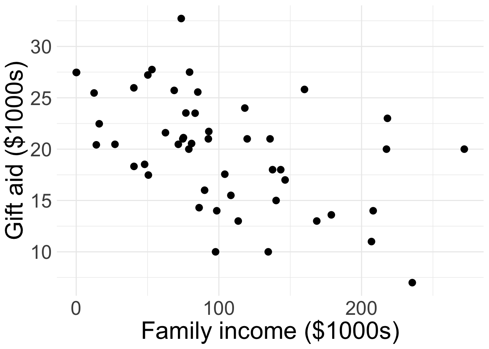
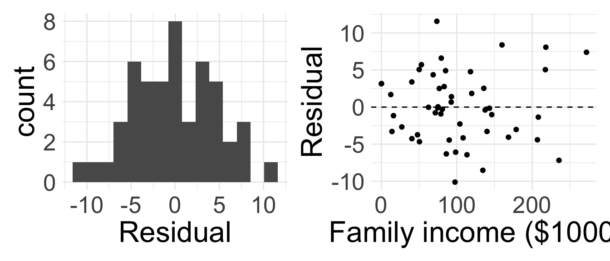
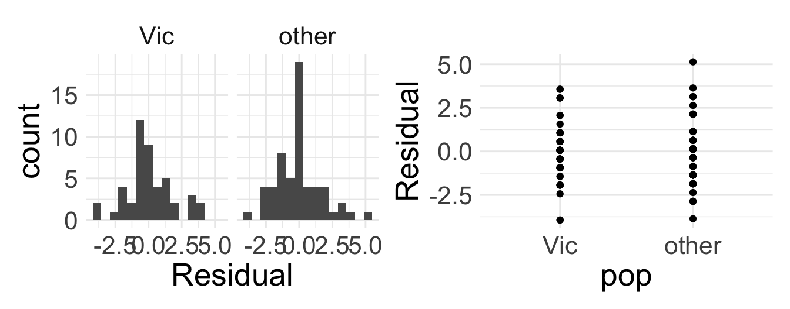

SLR coefficient estimates
Housekeeping
Will discuss details of Midterm 2 next week!
This Problem Set 9 is our last problem set!
Recap
- Linear regression: statistical method where the relationship between variable \(x\) and variable \(y\) is modeled as a line + error:
\[ y = \underbrace{\beta_{0} + \beta_{1} x}_{\text{line}} + \underbrace{\epsilon}_{\text{error}} \]
\(\beta_{0}\) and \(\beta_{1}\) are population parameters and their corresponding point estimates \(b_{0}\) and \(b_{1}\) are estimated from the data
Fitted model: \(\hat{y} = b_{0} + b_{1}x\)
Residual: \(e_{i} = y_{i}-\hat{y}_{i}\)
LINE conditions: Linearity, Independence, Normal residuals, Equal variance
Example: elmhurst
The elmhurst dataset from openintro provides a random sample of 50 students’ gift aid for students at Elmhurst College.
- We will examine the relationship between the family
incomeof the student and thegift aidthat student received (in $1000s)
Write down the linear regression model.
\[\text{gift aid} = \beta_{0} + \beta_{1} \text{income} + \epsilon\]
Are the first two conditions of LINE satisfied?
Fitting the least-squares line
Parameter estimates
- Like in previous topics, we have to estimate the parameters using data
- We want to estimate \(\beta_{0}\) and \(\beta_{1}\) using the \((x_{i}, y_{i})\)
- In practice, we let software do this for us
- However, we can derive the least-squares estimates using properties of the least-squares line
Estimating slope and intercept
First obtain \(b_{1}\):
\[ b_{1} =\frac{s_{y}}{s_{x}} R \]
where:
\(s_{x}\) and \(s_{y}\) are the sample standard deviations of the explanatory and response variables
\(R\) is the sample correlation between \(x\) and \(y\)
Then obtain \(b_{0}\):
\[b_{0} = \bar{y} - b_{1} \bar{x}\] where
\(\bar{y}\) is the sample mean of the response variable
\(\bar{x}\) is the sample mean of the explanatory variable
Take STAT 0211 or 0311 to see where these formulas come from!
Fitting elmhurst model (by hand)
Let’s obtain this coefficients by hand!
| variable | mean | s |
|---|---|---|
| family_income | 101.78 | 63.21 |
| gift_aid | 19.94 | 5.46 |
R <- cor(elmhurst$family_income, elmhurst$gift_aid)
R[1] -0.4985561What does this value of \(R\) tell us?
Set-up the calculations:
\(b_{1} = \frac{s_{y}}{s_{x}} R\)
\(b_{0} = \bar{y} -b_{1} \bar{x}\)
\(b_{1} = \frac{5.461}{63.206} \times -0.499 = -0.043\)
\(b_{0} = 19.936 - -0.043 \times 101.779 = 24.319\)
Write out the fitted model!
Example: elmhurst model
\[ \widehat{\text{gift aid}} = 24.319 -0.043 \times \text{family_income} \]
- Before we interpret the coefficients, we should verify that the linear model is appropriate for the data!

Do you believe the last two conditions of LINE are satisfied?
Interpreting parameters
Assuming the SLR model is appropriate, interpreting the parameters (i.e. coefficients) is one of the most important steps in an analysis!
Intercept interpretation
To interpret the estimate of the intercept \(b_{0}\), simply plug in \(x= 0\):
\[ \begin{align*} \hat{y} &= b_{0} + b_{1} x \\ &= b_{0} + b_{1}(0) \\ &= b_{0} \end{align*} \]
So, the intercept describes the estimated/expected value of the response variable \(y\) if \(x=0\)
- Be sure to interpret in context!
Interpret the intercept in our
elmhurstmodel- For a family with an income of $0, the expected gift aid would be $24.319 (in $1000s), or simply $24319
The intercept’s interpretation only makes sense when a value of \(x=0\) is plausible!
- This is typically not the case/relevant in many applications (though it is here!)
Slope interpretation
- Let \(\hat{y}_{1}\) be the estimated response for a given value of \(x\), so \(\hat{y}_{1} = b_{0} + b_{1} x\)
- Let \(\hat{y}_{2}\) be the estimated response for \(x +1\):
\[ \begin{align*} \hat{y}_{2} &= b_{0} + b_{1} (x + 1) \\ &= \color{orange}{b_{0} + b_{1}x} + b_{1} \\ &= \color{orange}{\hat{y}_{1}} + b_{1} \Rightarrow \\ b_{1} &= \hat{y}_{2} - \hat{y}_{1} \end{align*} \]
- Interpretation of estimated slope \(b_{1}\): for a 1 unit increase in the explanatory variable \(x\), we expect the response variable \(y\) to change by \(b_{1}\) units
Interpret in context the estimated slope coefficient in the
elmhurstmodel- For every $1000 increase in a family’s income, we expect that the gift aid the student receives will decrease by about $43
Running SLR in R
We run the model in R, and the output looks something like this:
| term | estimate | std.error | statistic | p.value |
|---|---|---|---|---|
| (Intercept) | 24.319 | 1.291 | 18.831 | 0 |
| family_income | -0.043 | 0.011 | -3.985 | 0 |
The estimates \(b_{0}\) and \(b_{1}\) are shown in the second column
- We will use the other columns for HTs and CIs!
We can also easily add the fitted SLR line to a ggplot:
Words of caution
The estimates from the fitted model will always be imperfect
- The linear equation is good at capturing trends, no individual outcome will be perfectly predicted
Do not try to use the model for \(x\) values beyond the range of the observed \(x\)!
The true relationship between \(x\) and \(y\) is almost always much more complex than our simple line
We do not know how the relationship behaves outside our limited window
Extrapolation
Suppose we would like to use our fitted model to estimate the expected gift aid for someone whose family income is $1,000,000:
Find the estimated gift aid (careful with units)
- \(\widehat{\text{gift aid}} = 24.319 + -0.043 \times 1000 = -18.681\)
- This is ridiculous!
This is an example of extrapolation: using the model to estimate values outside the scope of the original data
- We should never extrapolate!
Describing strength the fit
If we fit a model and determine LINE was met, we still need a way to describe how “good” the fit is!
Recall sample correlation \(R\) describes the linear relationship between variables \(x\) and \(y\)
We typically use the coefficient of determination or \(R^2\) (R-squared) to describe strength of linear fit of a model
- Describes amount of variation in \(y\) that is explained by predictor \(x\) in the least squares line
It turns out that \(R^2\) in SLR is exactly … \(R\) squared (i.e. the square of the sample correlation)
What are the possible values of \(R^2\)? What are desirable values of \(R^2\)?
Example: elmhurst model fit
The sample correlation between
family incomeandaidis \(R=\) -0.499So the coefficient of determination is \(R^2 = (-0.499)^2 = 0.249\)
- Interpretation: using a linear model, about 24.9% of the variability in
gift aidreceived by the student is explained byfamily income
- Interpretation: using a linear model, about 24.9% of the variability in
I think this is actually a pretty good model!
Categorical predictor
Thus far, we have assumed that \(x\) is numerical. Now let \(x\) be categorical.
- Note: we will go out of order and check conditions after fitting and interpreting model
Categorical predictor with two levels
For now, assume that \(x\) is categorical with two levels
Running example: the
possumdata fromopenintrowhich has data representing possums in Australia and New Guinea- Response variable:
tail_l(tail length in cm) - Explanatory variable:
pop(either “Vic” for possums from Victoria or “other” for possums from New South Wales or Queensland)
- Response variable:
Maybe we would think to write our regression as
\[\text{tail length} = \beta_{0} + \beta_{1} \text{pop} + \epsilon\]
Why doesn’t this work?
- Functions require a numerical input!
Indicator variables
We need a mechanism to convert the categorical levels into numerical form!
- This is achieved through an indicator variable which takes the value 1 for one specific level and the value 0 otherwise:
\[ \text{pop_other} = \begin{cases} 0 & \text{ if pop = Vic} \\ 1 & \text{ if pop = other} \end{cases} \]
| tail_l | pop | pop_other |
|---|---|---|
| 38.0 | other | 1 |
| 34.0 | Vic | 0 |
| 36.0 | Vic | 0 |
| 36.5 | Vic | 0 |
| 41.5 | other | 1 |
The level that corresponds to 0 is called the base level
- So
Vicis the base level
- So
Example: possum model
This yields the now “legal” SLR model
\[\text{tail length} = \beta_{0} + \beta_{1} \text{pop_other} + \epsilon\]
R will automatically convert categorical variables to indicators! So our estimates are as follows:
| term | estimate | std.error | statistic | p.value |
|---|---|---|---|---|
| (Intercept) | 35.935 | 0.253 | 142.065 | 0 |
| popother | 1.927 | 0.339 | 5.690 | 0 |
Write out the equation of our fitted model
Intercept for categorical \(x\)
Our fitted model is:
\[\widehat{\text{tail length}} = 35.935 + 1.927 \times \text{pop_other}\]
- Try interpreting the intercept \(b_{0}\)
What does \(\text{pop_other} = 0\) mean? That the possum is from Victoria!
So when \(x\) is categorical, the interpretation of \(b_{0}\) is the estimated value of the response variable for the base level of \(x\)
Interpretation: the expected tail length of possums from Victoria is 35.935 cm
Slope for categorical \(x\)
\[\widehat{\text{tail length}} = 35.935 + 1.927\times \text{pop_other}\]
Remember, \(b_{1}\) is the expected change in \(y\) for a one unit increase in \(x\)
What does it mean for \(\text{pop_other}\) to increase by one unit here?
- Changing from to a
popvalue of “Vic” to “other”
- Changing from to a
When \(x\) is categorical, the interpretation of \(b_{1}\) is the expected change in \(y\) when moving from the base level to the non-base level
Try interpreting \(b_{1}\) in context!
- Interpretation: possums from “other” (i.e. New South Wales/Queensland) are expected to have tail lengths about 1.927 cm longer than possums from Victoria
Assessing linear fit
When categorical \(x\) only has two levels, Linearity is always satisfied (yay!)
Independence condition is the same before
We need to evaluate Nearly normal residuals and Equal variance for each level
- Note: the residual plot (right) is uncessary given histogram of residuals

Are all four conditions for SLR met?
Remarks
When \(x\) is categorical, mathematical meaning for \(b_{0}\) and \(b_{1}\) are the same as for numerical \(x\), but they have more specific/nuanced interpretations when placed in context
When \(x\) is categorical, SLR is a bit “overkill” (you’ll explore this in homework)
- As we’ll see next week, the more interest things happen when we have more than one predictor in the model!